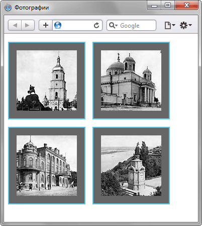

Как разместить несколько картинок рядом по горизонтали?
комментариев: 52
Тема:
|
Internet Explorer |
Chrome |
Opera |
Safari |
Firefox |
Android |
iOS |
|
4.0+ |
1.0+ |
4.0+ |
1.0+ |
1.0+ |
1.0+ |
1.0+ |
Задача
Добавить на страницу несколько изображений, чтобы они располагались рядом с друг другом по горизонтали.
Решение
Изображения являются строчными элементами, поэтому написание в коде подряд несколько тегов <img> автоматически выстроит картинки по горизонтали. Тем не менее, с помощью стилей этим построением можно управлять более изящно.
Для начала рассмотрим простой пример, когда изображения выстраиваются по горизонтали без стилевого оформления (пример 1).
Пример 1. Картинки по горизонтали
HTML5IECrOpSaFx
<!DOCTYPE html>
<html>
<head>
<meta charset="utf-8">
<title>Фотографии</title>
</head>
<body>
<p>
<img src="images/thumb1.jpg" alt="Фотография 1" width="120" height="120">
<img src="images/thumb2.jpg" alt="Фотография 2" width="120" height="120">
<img src="images/thumb3.jpg" alt="Фотография 3" width="120" height="120">
<img src="images/thumb4.jpg" alt="Фотография 4" width="120" height="120">
</p>
</body>
</html>
Результат данного примера показан на рис. 1. Изображения выстраиваются в одну строку по горизонтали, а если некоторые из них не помещаются по ширине в окне, то переносятся на следующую строку.
Рис. 1. Фотографии, расположенные по горизонтали
Обратите внимание на пробел между фотографиями, он появляется за счет переноса тега <img> в коде на новую строку. Чтобы убрать пустой промежуток достаточно написать теги <img> в примере в одну строку.
Для регулирования горизонтальных и вертикальных отступов между фотографиями применяется стилевое свойство margin-right и margin-bottom. В примере 2 кроме отступов к фотографиям также добавлена рамка и цветная область вокруг изображений.
Пример 2. Отступы у фотографий
HTML5CSS 2.1IECrOpSaFx
<!DOCTYPE html>
<html>
<head>
<meta charset="utf-8">
<title>Фотографии</title>
<style>
.thumb img {
border: 2px solid #55c5e9; /* Рамка вокруг фотографии */
padding: 15px; /* Расстояние от картинки до рамки */
background: #666; /* Цвет фона */
margin-right: 10px; /* Отступ справа */
margin-bottom: 10px; /* Отступ снизу */
}
</style>
</head>
<body>
<p class="thumb">
<img src="images/thumb1.jpg" alt="Фотография 1" width="120" height="120">
<img src="images/thumb2.jpg" alt="Фотография 2" width="120" height="120">
<img src="images/thumb3.jpg" alt="Фотография 3" width="120" height="120">
<img src="images/thumb4.jpg" alt="Фотография 4" width="120" height="120">
</p>
</body>
</html>
Результат данного примера показан на рис. 2.

Рис. 2. Вид фотографий, оформленных с помощью стилей